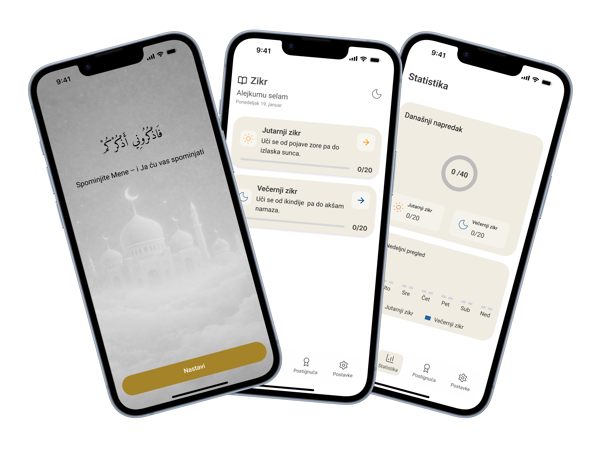

Zikr App is a minimalist Islamic mobile application designed to help users stay consistent with daily remembrance (zikr). It offers guided morning and evening zikr, progress tracking, and simple statistics to support spiritual focus and habit-building. The calm visual design and intuitive flow create a peaceful, distraction-free experience.

mZikr is a thoughtfully designed mobile application that helps users discover and organize Islamic remembrance (zikr) in a simple and efficient way. By combining personalized recommendations with an intuitive interface, the app makes everyday spiritual practice easier and more enjoyable.
Zikr App is a mobile application designed to help users maintain consistency in daily remembrance (zikr). The app focuses on simplicity, calm visuals, and habit-building features such as guided zikr sessions and progress tracking. The goal was to create a peaceful digital space that supports spiritual routines without distractions.
Many users struggle to stay consistent with daily zikr due to lack of structure and reminders, overly complex or visually noisy religious apps, and no clear sense of progress or motivation. The design solutions focus on encouraging daily zikr habits (morning & evening), creating a calm, minimal, and spiritually respectful interface, providing gentle motivation through progress and statistics, and being easy to use for all age groups.
The UX process included comprehensive research and inspiration analysis, targeting Muslims who want to build or maintain a daily zikr routine, users who prefer simple, distraction-free apps, and beginners looking for guidance as well as experienced users.
The final design delivers a simple, motivating spiritual experience that supports consistency and habit-building while maintaining a calm, respectful visual identity.